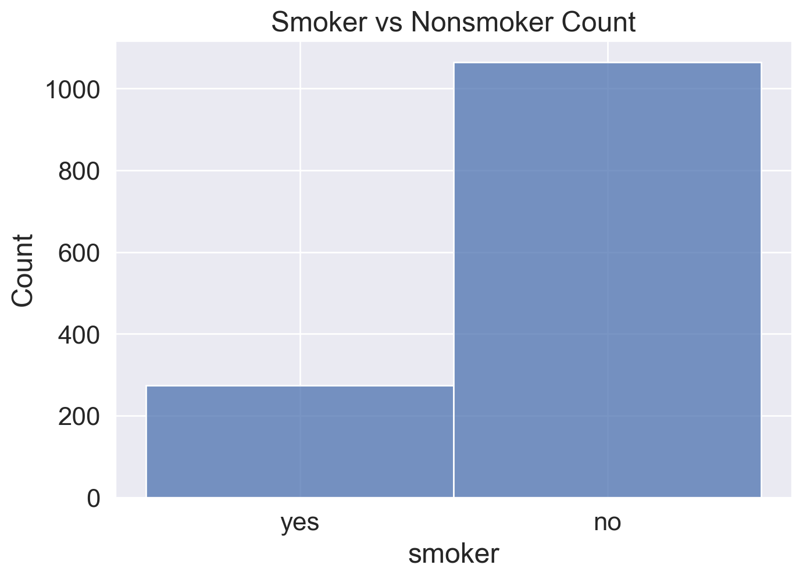
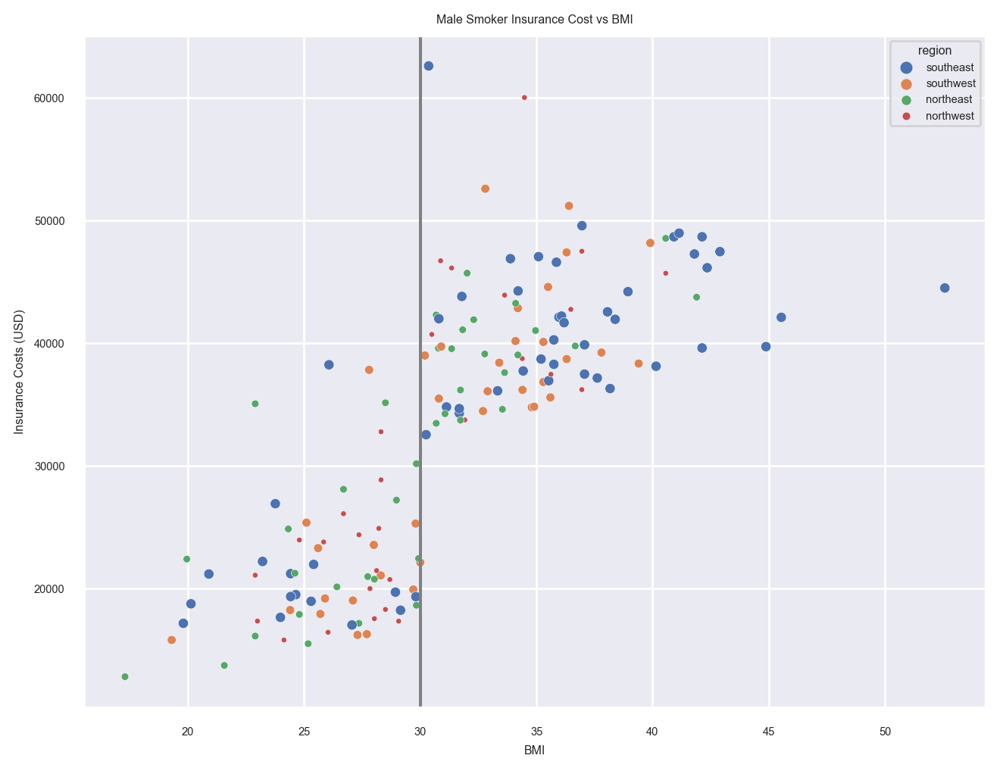
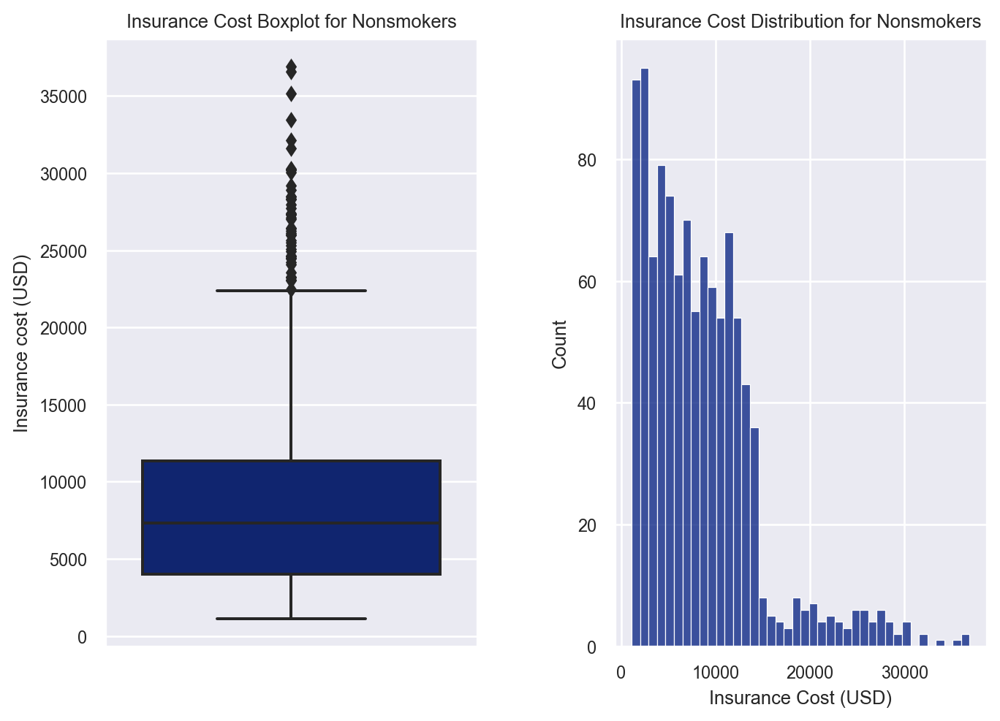

age sex bmi children smoker region charges
0 19 female 27.900 0 yes southwest 16884.92400
1 18 male 33.770 1 no southeast 1725.55230
2 28 male 33.000 3 no southeast 4449.46200
3 33 male 22.705 0 no northwest 21984.47061
4 32 male 28.880 0 no northwest 3866.85520U.S. Medical Insurance Costs
Purpose of this Project
This project focuses on the medical insurance industry. I demonstrate the ability to provide visualizations and statistical inferences when given a cleaned up data set. Here is the data set source: https://www.kaggle.com/datasets/mirichoi0218/insurance
Here are a few questions I formulated before diving into the data set: What single component causes the most increase in insurance costs? What variables play a role in increasing or decreasing insurance costs? What would be the ideal individual to minimize the cost of medical insurance?
I look into smokers as being a variable of interest. Additionally, I dive into the difference of between male and female insurance costs for both smokers and nonsmokers.
If you wish to skip towards the results portion, feel free to scroll down and have a quick read! Interesting results were found.
Set Up and Importing the Data
Analyzing Smoker Insurance Costs
We want to know what influences the cost of insurance. What causes an individual to pay more for their insurance? We can infer that being a smoker will drastically increase their out of pocket medical insurance expenses.
I take a look into how many smokers we have in this data set. Then, I take a quick look into the smokers’ distribution of charges and show a boxplot to visualize the insurance cost quartiles. Next, I dive into using some statistics such as finding the min, max, mean, median, etc. I follow up by seperating male and female smokers and seeing if there’s a drastic change in their expenses.
Histogram Plot of Smokers vs Nonsmokers
- Smoker Count: 274
- Nonsmoker Count: 1064

<Figure size 672x480 with 0 Axes>Boxplot and Histogram Distribution of Insurance Costs for Smokers
The interquartile range is $20,125.33. Very high spread from the first and third interquartiles.
Now, notice that we have a bimodal distribution. This means that there is a variable in the data set that is drastically affecting the insurance cost. Since there is two “humps” we must identify the component that causes a further jump in insurance costs for those who smoke.
What could cause this? - Region? - Bmi? - Sex? - Children? - Age?
<Figure size 672x480 with 0 Axes>Insurance Cost Statistics for Smokers
Summary Stats: - Mean: $32,050.23 - Median: $34,456.35 - Max: $63,770.43 - Min: $12,829.46 - Standard Deviation: $11,520.47 - Variance: 132721153.14
Given the distribution, we can say that the mean represents the true average insurance cost for smokers.
Seperating Male and Female Smokers
I chose to seperate male and female smokers to see if there was a noticable difference in cost. Notice in the graphs below, that we can easily identify the culprit for the bimodal distribution. The BMI drastically influences the insurance cost when it is greater than or equal to 30 (the obese rating starts at 30 forward). This means that being obese AND being a smoker can sharply increase your medical insurance cost.
Note: As Age slowly increases, the insurance cost also slowly increases. So, there is a gradual increase in insurance cost as you age. That is common sense since as one ages, one develops more health issues as they near death.
Analyzing Male Smokers
Graph One: Cost Distribution - Bimodal Distribution is again present. - Two clusters of cost are due to an underlying variable.
Graph Two: Barplot of Average Cost per Child - No clear trend. - Only valuable note is that having 4 children seems to have an overall lower average insurance cost.
Graph Three: Scatterplot of Cost vs BMI with Region - There is a visable linear relationship between BMI and Cost. - There are two clusters of individuals but follows the linear relationship. - At >=30 BMI, there is a clear signifcant increase in insurance cost for male smokers. - Note: a BMI of 30 or implies that the individual is “obese” (though, BMI is not necessarily a good measurement–see results). - No trends with the region.
Graph Four: Scatterplot of Cost vs Age with Children - There is a linear trend, but split into two linear clusters. - As found earlier, this is most likely due to BMI differences in the indivduals. - Overtime, an individual’s insurance cost will increase as expected.
Graph Five: Barplot of Average Cost per Region - No valuable insights can be drawn.
Graph Six: Boxplot of Male Smoker Insurance Cost - Noteworthy to see the spread of male smokers’ insurance cost.

<Figure size 672x480 with 0 Axes>BMI Graph Highlighted
As mentioned above, the reason why the cost distribution had two clusters was due to the difference in BMI in each male smoker. Male smokers with a BMI >= 30 will that their expense increase by approximately 47%.
Text(0, 0.5, 'Insurance Costs (USD)')
Analyzing Female Smokers
Graph One: Cost Distribution - Bimodal Distribution is again present. - Two clusters of cost are due to an underlying variable.
Graph Two: Barplot of Average Cost per Child - No clear trend. - Only valuable note is that having 5 children seems to have an overall lower average insurance cost.
Graph Three: Scatterplot of Cost vs BMI with Region - There is a visable linear relationship between BMI and Cost - There are two clusters of individuals but follows the linear relationship. - At >=30 BMI, there is a clear signifcant increase in insurance cost for female smokers. - Note: a BMI of 30 or implies that the individual is “obese” (though, BMI is not necessarily a good measurement–see results). - No trends with the region.
Graph Four: Scatterplot of Cost vs Age with Children - There is a linear trend, but split into two linear clusters. - As found earlier, this is most likely due to BMI differences in the indivduals. - Overtime, an individual’s insurance cost will increase as expected.
Graph Five: Barplot of Average Cost per Region - No valuable insights can be drawn.
Graph Six: Boxplot of Female Smoker Insurance Cost - Noteworthy to see the spread of female smokers’ insurance cost.
Given that the Insurane Cost vs BMI is essentially the same as male smokers, the stated results will apply here.

<Figure size 672x480 with 0 Axes>Average Insurance Cost Comparision of Male and Female Smokers
Noteworthy mention: - Male smokers pay approximately 1.34% more than their female counterparts when their BMI less than 30. - Male smokers pay approximately 1.42% less than their female counterparts when their BMI greater than or equal to 30.

<function matplotlib.pyplot.clf()>Boxplot and Histogram Distribution of Insurance Costs for Nonsmokers
The interquartile range is $7,378.07. Spread is minimal from the first and third interquartiles.
Now, notice that we have a right-skewed distribution.
What could cause this? - Region? - Bmi? - Sex? - Children? - Age?
Keep in mind, there is a chance that we may not be able to determine the cause of those outliers.
7378.07
<Figure size 672x480 with 0 Axes>Analyzing the insurance cost of nonsmokers
Now let’s look at the nonsmokers.
Summary Stats: - Mean: $8,434.27 - Median: $7,345.41 - Max: $39,910.61 - Min: $1,121.87 - Standard Deviation: $5,990.96 - Variance: 35891656
Analyzing Male Nonsmokers
Graph One: Cost Distribution - Right-skewed distribution is again present. - Knowing this, we should go with the median as the most appropriate statistic instead of the mean.
Graph Two: Barplot of Average Cost per Child - There seems to be a trend that having more children will lead to higher average insurance costs. - Given the information from the smokers, when an individual has 5 children or more, their insurance costs drops signifcantly. - However, the lowest average comes from having no children at all.
Graph Three: Scatterplot of Cost vs BMI with Region - There is no correlation between cost and BMI of nonsmokers. - This is an interesting finding. - No trends with the region.
Graph Four: Scatterplot of Cost vs Age with Children - Strong linear relationship between insurance cost and age. - A secondary trend is shown with the number of children. - The less children, the insurance cost is on the lower end of the linear relationship. - The more children, the insurance cost is on the higher end of the linear relationship - The outliers do not follow the trend line.
Graph Five: Barplot of Average Cost per Region - No valuable insights can be drawn. - Some regions are simply cheaper than others.
Graph Six: Boxplot of Male Smoker Insurance Cost - Noteworthy to see the spread of male smokers’ insurance cost.

<Figure size 672x480 with 0 Axes>
<Figure size 672x480 with 0 Axes>Analyzing Female Nonsmokers
Graph One: Cost Distribution - Right-skewed distribution is again present. - Knowing this, we should go with the median as the most appropriate statistic instead of the mean.
Graph Two: Barplot of Average Cost per Child - Similar to the male nonsmokers, there seems to be a trend that having more children will result in higher average insurance costs. - Given the information from the smokers, when an individual has 5 children or more, their insurance costs drops on average. - However, the lowest average comes from having no children at all.
Graph Three: Scatterplot of Cost vs BMI with Region - Again, there is no correlation between cost and BMI of nonsmokers. - No trends with the region.
Graph Four: Scatterplot of Cost vs Age with Children - Strong linear relationship between insurance cost and age. - A secondary trend is shown with the number of children. - The less children, the insurance cost is on the lower end of the linear relationship. - The more children, the insurance cost is on the higher end of the linear relationship - The outliers do not follow the trend line.
Graph Five: Barplot of Average Cost per Region - There is a slight trend of region importance. - The northeast is more expensive on average than the southwest.
Graph Six: Boxplot of Male Smoker Insurance Cost - Noteworthy to see the spread of male smokers’ insurance cost.

<Figure size 672x480 with 0 Axes>Nonsmokers vs Smokers
The average insurance cost for a nonsmoker male is $8087.2.
The average insurance cost for a nonsmoker female is $8762.3.
The average difference in insurance cost for nonsmoker male and female is $675.1.
The nonsmoker males are charged 4.01% less than their female counterpart.
The average insurance cost for a smoker male is $33042.01.
The average insurance cost for a smoker female is $30679.0.
The average difference in insurance cost for smoker male and female is $2363.01.
The smoker males are charged 3.71% more than their female counterpart.
On average, a male nonsmoker pays $8087.2, while a female smoker pays $33042.01.
The difference in their insurance charges is $24954.81.
A male smoker will get charged approxmiately 408.57% more than a nonsmoker.
On average, a female nonsmoker pays $8762.3, while a female smoker pays $30679.0.
The difference in their insurance charges is $21916.7.
A female smoker will get charged approxmiately 350.12% more than a nonsmoker.Results
It is clear that smoking will increase your health insurance charges. Male and female smokers will receive an additional charge for having a BMI equal or greater than 30. Male smokers hitch a 52% increase while female smokers endure a 49% increase. Keep in mind that this apart from their base premium increase for being smokers in the first place. To emphasize, male smokers will approximately be charged 408.57% more than their nonsmoker counterpart. Similarly, female smokers approximately pay 350.12% more than their nonsmoker counterparts. Given the data, it pushes the idea that smoking and being in an unhealthy body mass index will punish those individuals through higher health insurance charges. Note: Overtime, health insurance does get slightly more expensive as we age.
There is much more to be done with this project. I may come back to it and do some machine learning methods to predict if this sample represents the entire population or not.
I included two articles: One states that BMI metric is an inaccurate method to measure human height and weight; the other confirms that tabacco usage allows insurance companies to charge those individuals a premium.
“BMI (body mass index), which is based on the height and weight of a person, is an inaccurate measure of body fat content and does not take into account muscle mass, bone density, overall body composition, and racial and sex differences”
(source: https://www.medicalnewstoday.com/articles/265215)
“The practice of charging tobacco users more is called tobacco rating. The ACA allows for insurance companies to charge smokers up to 50% more (or premiums that are 1.5 times higher) than non-smokers through a tobacco surcharge.”
(source: https://www.healthmarkets.com/content/smoking-and-health-insurance)